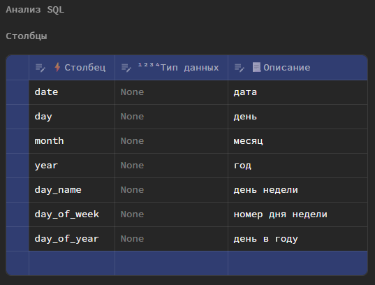
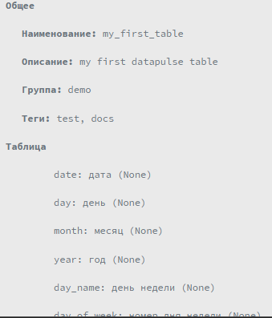
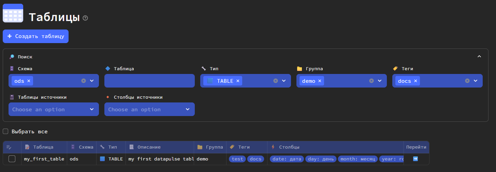
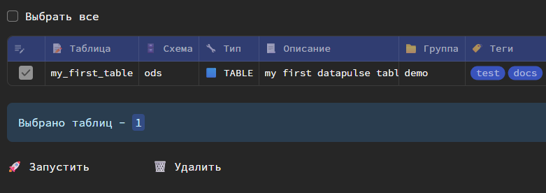

Первая модель
Убедитесь, что перед запуском выполнили все шаги из инструкции по установке
1️⃣ Запуск Datapulse
Выполните следующую команду в консоли
datapulse run
http://localhost:8501/
Для инфо
При первом запуске streamlit (на основе которого реализован интерфейс) может попросить ввести email. Можно ввести любой символ и нажать Enter
2️⃣ Создание первой модели dbt
Перейдите в раздел Таблицы и нажмите Создать таблицу.
В открывшемся окне укажите:
- Схему (если нет опций, введите вручную)
- Наименование модели
- Описание (не обязательно)
- Группу (не обязательно; если нет опций, введите вручную)
- Теги (не обязательно; если нет опций, введите вручную через запятую)

Перейдите в раздел SQL и внесите ваш SQL-запрос.
Пример SQL-запроса - календарь
-- пример для PostgreSQL
WITH RECURSIVE calendar AS (
-- Базовый случай: начинаем с текущей даты
SELECT
CURRENT_DATE AS date,
EXTRACT(DAY FROM CURRENT_DATE) AS day,
EXTRACT(MONTH FROM CURRENT_DATE) AS month,
EXTRACT(YEAR FROM CURRENT_DATE) AS year,
TO_CHAR(CURRENT_DATE, 'Day') AS day_name,
EXTRACT(DOW FROM CURRENT_DATE) AS day_of_week,
EXTRACT(DOY FROM CURRENT_DATE) AS day_of_year
UNION ALL
-- Рекурсивный случай: добавляем по одному дню
SELECT
CAST(date + INTERVAL '1 day' as date) as date,
EXTRACT(DAY FROM date + INTERVAL '1 day'),
EXTRACT(MONTH FROM date + INTERVAL '1 day'),
EXTRACT(YEAR FROM date + INTERVAL '1 day'),
TO_CHAR(date + INTERVAL '1 day', 'Day'),
EXTRACT(DOW FROM date + INTERVAL '1 day'),
EXTRACT(DOY FROM date + INTERVAL '1 day')
FROM calendar
WHERE date < CURRENT_DATE + INTERVAL '29 day' -- Останавливаемся через 30 дней
)
SELECT
date,
day,
month,
year,
TRIM(day_name) AS day_name,
CASE day_of_week
WHEN 0 THEN 'Воскресенье'
WHEN 1 THEN 'Понедельник'
WHEN 2 THEN 'Вторник'
WHEN 3 THEN 'Среда'
WHEN 4 THEN 'Четверг'
WHEN 5 THEN 'Пятница'
WHEN 6 THEN 'Суббота'
END AS day_of_week,
day_of_year AS day_of_year
FROM calendar
ORDER BY date;
Важно
Запрос должен быть SELECT-запросом (без INSERT, UPDATE, DELETE конструкций).
Не ставьте ; в конце.
После нажмите кнопку Запустить. Будет выполнен парсинг SQL-запроса и определены выходные столбцы и таблицы и столбцы источники. В указанном примере, нет таблиц источников, поэтому ничего определено не будет.
Дополнительно вы можете указать типы данных и описания атрибутов.
При указании типов данных, запрос будет в дальнейшем автоматически дополнен конструкциями CAST()

Далее в разделе Дополнительно выберите тип модели.

И после в разделе Запуск сперва проверьте параметры создаваемой модели, раскрыв блок Проверка

И нажмите кнопку Сохранить.
Таблица будет создана в DWH в указанной схеме.
3️⃣ Карточка модели
Перейдите в карточку модели по кнопке, появившейся после создания.

4️⃣ Data catalog
Вернитесь в раздел Таблицы. В реестре вы увидете созданную таблицу. Ее также можно будет находить (если моделей много) по встроенному поиску.

Выберите в таблице созданную модель и нажмите появившуюся кнопку Запустить.

В открывшемся окне нажмите Да и дождитесь сообщения об успешном обновлении.
5️⃣ Просмотр логов
Перейдите в раздел Обновление данных и увидите список запущенных ранее процессов обновления dbt моделей.
Перейдите в Детали последнего.

В открывшемся окне увидите детали и результаты обновления модели.